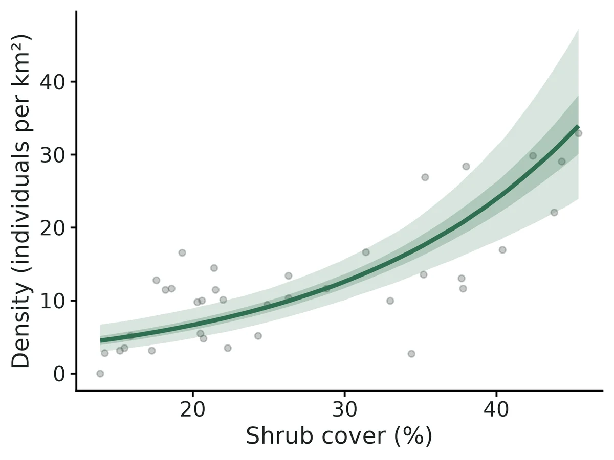
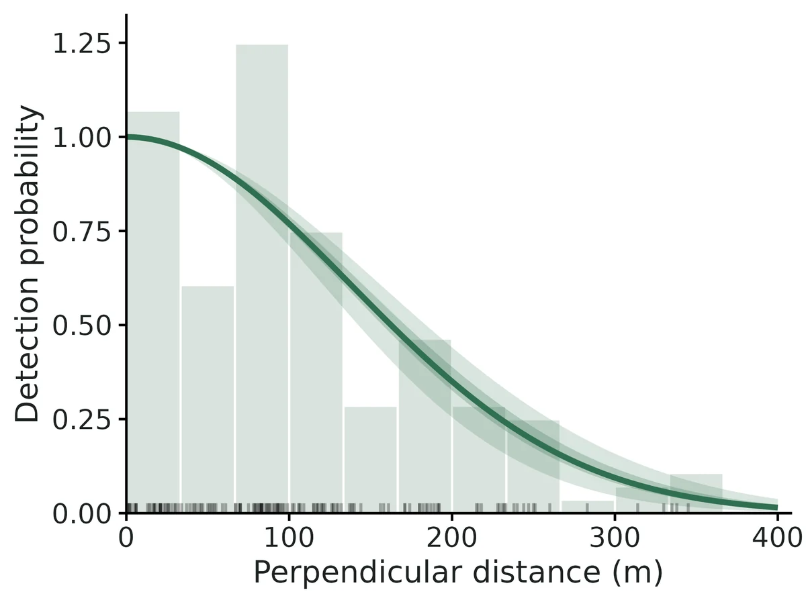
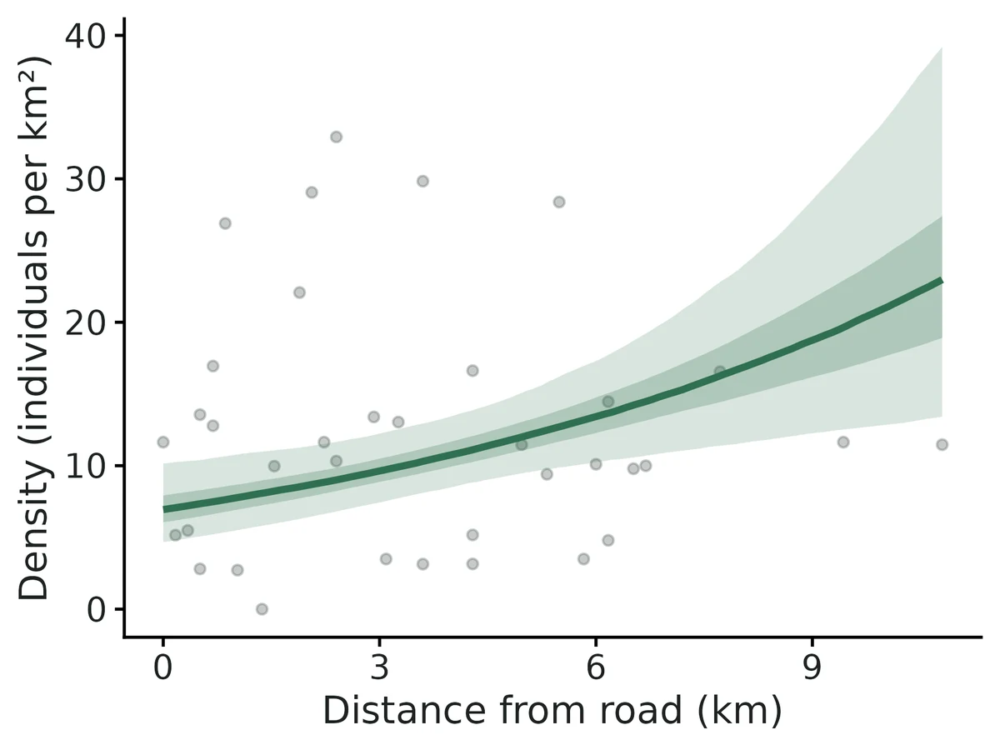
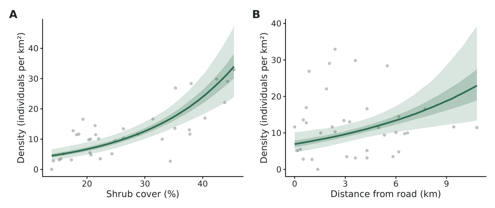

Distance sampling (conventional, multiple-covariate and hierarchical)
"How many deer (birds, primates, tortoises...) are there per square kilometre and in my study area, and is density higher in some habitats?" Observers miss more animals the farther away they are. Distance sampling models how detection falls with distance (the detection function), estimates the share of animals within the truncation distance that were seen, and corrects the counts for the ones that were missed.
Is this the right analysis?
Use it when
Observers walked line transects or stood at points and recorded the distance (perpendicular for lines, radial for points) to every animal or group they detected, with detection falling off with distance; the question is how many animals there are per km2 and in the study area, and (optionally) whether density is associated with habitat measured per transect. Exact or binned distances, single or repeated visits, groups (clusters), strata.
Not for
Counts without distances (use nmixture), detection/non-detection (occu-single), individually identified animals (scr or capture-recapture), camera-trap distance sampling with snapshot moments (not implemented), surveys where animals on the line are missed (g(0) < 1, e.g. diving whales or cryptic birds: needs double-observer mrds, not implemented), spatial density surface models over a full study area (DSM; only covariate-based prediction to a grid is offered).
The data you need
Observations CSV (transect id, distance, optional group size, optional visit, optional observer/weather), transects CSV (id, line length or number of visits, stratum, habitat covariates; every surveyed transect, including those with no detections), study-area size (km2, per stratum) for abundance, optional prediction grid.
What the example's main data file looks like:
| transect_id | date | observer | perp_distance_m | group_size |
|---|---|---|---|---|
| MD01 | 2025-01-19 | JK | 61 | 4 |
| MD01 | 2025-01-19 | JK | 83 | 2 |
| MD01 | 2025-01-19 | JK | 88 | 1 |
| MD01 | 2025-01-19 | JK | 96 | 5 |
| MD02 | 2025-01-16 | AB | 3 | 4 |
Not sure? Use the finder to compare modules.
The worked example
Mule deer density on a winter range from line-transect distance sampling, with shrub-cover and road-distance effects (simulated data)
The question: How many mule deer are on the 360 km2 winter range (per km2 and in total, overall and in the north and south units), and is deer density higher where shrub cover is higher and farther from the highway?
The data are simulated, so the true answer is known and the analysis can be checked against it.
What the researcher typed
I have a mule deer line-transect survey in this folder: a file of deer groups seen with the perpendicular distance from the line (m), group size, observer and date; a file of the 36 transects with their length, management unit (north or south, 180 km2 each), shrub cover and distance to the highway; and a 1 km2 grid of the whole 360 km2 winter range with the same two habitat values. Please estimate how many deer there are per km2 and in total, for each unit and overall, and tell me whether deer are more common where shrub cover is higher and farther from the road. Check that the method works for a survey like mine before you trust it, and give me a report and figures I can put in a paper.
Run it yourself
Download the example data below and unzip it.
Open the unzipped folder in Claude Code (see Install).
Paste the prompt above. The agent checks the files, writes a plan, runs planted truth, fits the model and writes the report. You can compare your results with the ones below.
Contains deer_observations.csv, deer_transects.csv, study_area_grid.csv, the settings file (config.yaml), a description of the data and a step-by-step walkthrough.
Study design details
| model | conventional distance sampling (Distance::ds: half-normal / hazard-rate + cosine adjustments, AIC model-averaged, R2 variance) + hierarchical distance sampling (unmarked::distsamp) for habitat effects |
|---|---|
| survey | line transects, single visit, exact distances |
| transects | 36 |
| transects with zero detections | 1 |
| line length km | 1.89-4.10 (mean 3.19) |
| total line km | 114.9 |
| study area km2 | 360 |
| strata | north 180 km2, south 180 km2 |
| truncation m | 400 |
| detections | 146 |
| detections within truncation | 145 |
| deer counted | 486 |
| mean group size observed | 3.33 |
| observers | 2 |
| density covariates | shrub_cover_pct, road_dist_km |
| prediction grid cells | 360 |
Results from the example data

In plain language
- A group within 400 m of the line had probability 0.44 (95% CI 0.38 to 0.50) of being detected. Equivalently, the effective strip half-width is 175 m.
- Density: 12.0 (95% CI 9.24 to 15.5) individuals per km2, which over the 360 km2 study area is 4,314 (95% CI 3,328 to 5,593) individuals.
- This is 3.59 (95% CI 2.82 to 4.58) groups per km2 times a mean group size of 3.34 (95% CI 3.12 to 3.56).
- By stratum: north 7.97 (95% CI 5.68 to 11.2) per km2; south 16.0 (95% CI 11.6 to 22.0) per km2.
- Each increase of 10 percentage points in shrub cover multiplies expected density by 1.89 (95% CI 1.56 to 2.30), i.e. +89%.
- Each increase of 3 km in distance from road multiplies expected density by 1.40 (95% CI 1.12 to 1.74), i.e. +40%.
- This is an association from an observational survey, not proof that shrub cover causes the difference.
- The hierarchical model's density over the study area (12.2 (95% CI 9.70 to 15.3) per km2) agrees with the design-based estimate above.
- Goodness of fit: Cramer-von Mises test of the distances, p = 0.72. No evidence of lack of fit.
More figures



Figures are the module's default publication figures, reduced for the web. The report also saves them as PDF and full-resolution PNG.
Planted truth at the example's design
Before trusting the example's results, the module was run on many simulated data sets with the same design and known true values. Each row is one quantity: did the method get it back? (What the thresholds are.)
What OPEN means here. The module works (it passes at its default design), but at this example's design not every quantity passed the planted-truth check, so CascadiaTools does not certify those. 11 of the 13 quantities checked passed outright. For density at average site, group density at average site, the estimate itself was accurate (within 10% of the truth on average), but the 95% interval was too narrow, containing the truth only 88% to 89% of the time. Use those estimates, but read their intervals as somewhat over-confident. The quantities that passed can be used as reported. With your own data, the report would say the same and suggest what would help: more data, a simpler model or a different estimator. More on DONE and OPEN.
Why, for this example:
All estimands that answer the question (density, abundance, per-unit density, detection, habitat rate ratio) pass planted truth at this design, the fit converged and both GOF checks pass; but the HDS density at an average transect (whose uncertainty also sets the bands on the conditional-effect curves and the map) under-covers (0.885 vs bound 0.904; VALIDATION.md Known limit 9, prepared fix not installed).
11 of 13 rows pass.
| Quantity | True value | Average estimate | Bias | Coverage | Result |
|---|---|---|---|---|---|
| abundance | 4,193 | 4,149 | -1.0% | 0.97 | ✓ PASS |
| density_at_average_site | 10.4 | 10.3 | -0.5% | 0.89 | ✗ FAIL |
| density_beta_habitat | 0.49 | 0.488 | -0.4% | 0.95 | ✓ PASS |
| density_per_km2 | 11.7 | 11.5 | -1.0% | 0.97 | ✓ PASS |
| density_per_km2_S1 | 11.6 | 11.5 | -1.5% | 0.97 | ✓ PASS |
| density_per_km2_S2 | 11.7 | 11.6 | -0.5% | 0.98 | ✓ PASS |
| detection_prob | 0.455 | 0.466 | +2.4% | 0.95 | ✓ PASS |
| esw_m | 181.9 | 186.2 | +2.4% | 0.95 | ✓ PASS |
| group_density_at_average_site | 3.05 | 3.04 | -0.4% | 0.89 | ✗ FAIL |
| group_density_per_km2 | 3.43 | 3.4 | -0.9% | 0.99 | ✓ PASS |
| mean_group_size | 3.4 | 3.39 | -0.2% | 0.93 | ✓ PASS |
| rate_ratio_habitat | 1.63 | 1.64 | +0.2% | 0.95 | ✓ PASS |
| sigma_m | 146 | 145.8 | -0.1% | 0.97 | ✓ PASS |
Limits that matter
- HDS intercept (density_at_average_site) ignores detection-key selection uncertainty: coverage 0.885 at this design (0.92 when half-normal chosen, as in this data set; 0.81 otherwise). Design-based density, abundance and slopes unaffected (Known limit 9).
- Design-based density intervals are conservative when density follows habitat across transects (coverage 0.975 here; Known limit 3).
- g(0) = 1, no evasive movement and accurate distances cannot be tested from these data; 75 m evasive movement biased density -27% in simulation, heaping at zero biased it upward (Known limit 4).
- Recovery simulated one habitat covariate and a single detection scale; the second covariate (road) and the observer difference were checked only on the example fit.
- The density map extrapolates to grid cells with shrub cover outside the surveyed 13.9-45.4 %.
All known limits from the module's validation record
- Fewer than ~40 detections: the HDS intercept (
density_at_average_site) under-covers (0.89 at 8 lines); with binned point data and a hazard-rate truth, density is biased +14% and the hazard-rate shape is not recoverable (section 2b, 2c). The report warns when < 60 detections. - gdistsamp (repeated visits) needs many transects and visits: +23% bias in density at 60 x 4, +5% at 120 x 6. Availability is weakly identified. If animals are sedentary between visits it fails badly (-29%); pool visits as effort with the single-visit engines instead.
- Design-based intervals are conservative (coverage 0.98-0.99) when density follows a covariate trend across transects (R2/P2 behaviour), so they are wider than necessary.
- g(0) = 1, no movement, accurate distances are untestable from the data alone: evasive movement gives -27% with coverage 0.45; heaping at 0 gives erratic upward bias (median +8%, 10% of datasets > 2x). How often the GOF test flags these violations was not measured.
- The bootstrap variance option is slow (10-15 s per resample) and was validated only at the 12-line design (100 replicates).
- MCDS detection-function figures show the curve averaged over covariates (no per-level curves).
- Not implemented: double-observer (mrds, g(0) < 1), density surface models (DSM), camera-trap distance sampling, availability for diving or singing animals other than via repeated visits.
- Observer-effect false-positive rate was 0.075 (15/200), borderline but within the binomial range.
- HDS intercept ignores key-selection uncertainty (found in independent verification, below):
density_at_average_site(anddensity_per_km2_hds) come from the AIC-best HDS key only. When the truth is half-normal the hazard-rate wins AIC in 20-30% of data sets, and the intercept interval then covers the truth in only 70-79% of them. At a 70-point design with 2 pooled visits overall coverage is 0.873 (FAIL, bound 0.897). Design-based density, abundance and the habitat slopes are unaffected. A fix is prepared but NOT installed or validated (see below).
Engine, references and full details
Engine: Distance::ds (CDS/MCDS, design-based density); unmarked::distsamp / gdistsamp (hierarchical, covariates on density, availability); hand-written likelihoods (cross-check).
References
Buckland et al. (2001, 2015); Miller et al. (2019) J. Stat. Softw. 89(1); Marques et al. (2007) Auk 124:1229; Fewster et al. (2009) Biometrics 65:225; Innes et al. (2002) NAMMCO Sci. Publ. 4:169; Royle, Dawson & Bates (2004) Ecology 85:1591; Chandler, Royle & King (2011) Ecology 92:1429; Fiske & Chandler (2011) J. Stat. Softw. 43(10); Buckland, Burnham & Augustin (1997) Biometrics 53:603; Hayes & Buckland (1983) Biometrics 39:29; Kery & Royle (2016) AHM vol. 1 ch. 8. Full citations in module.R (references).